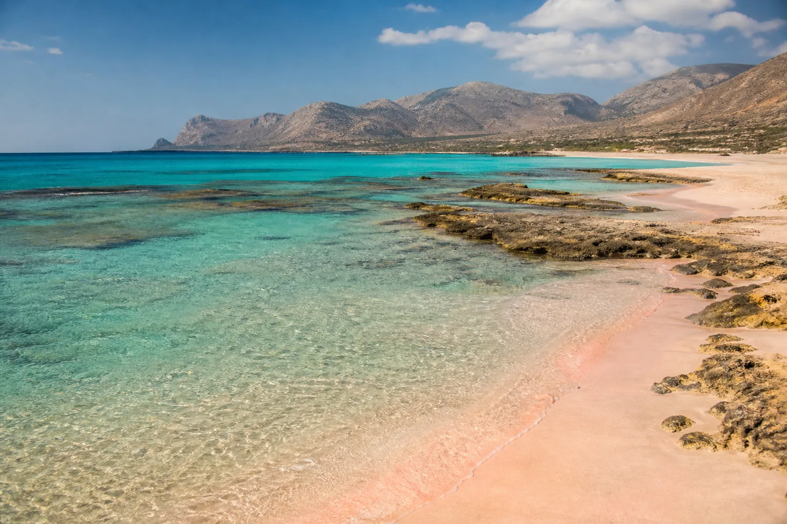
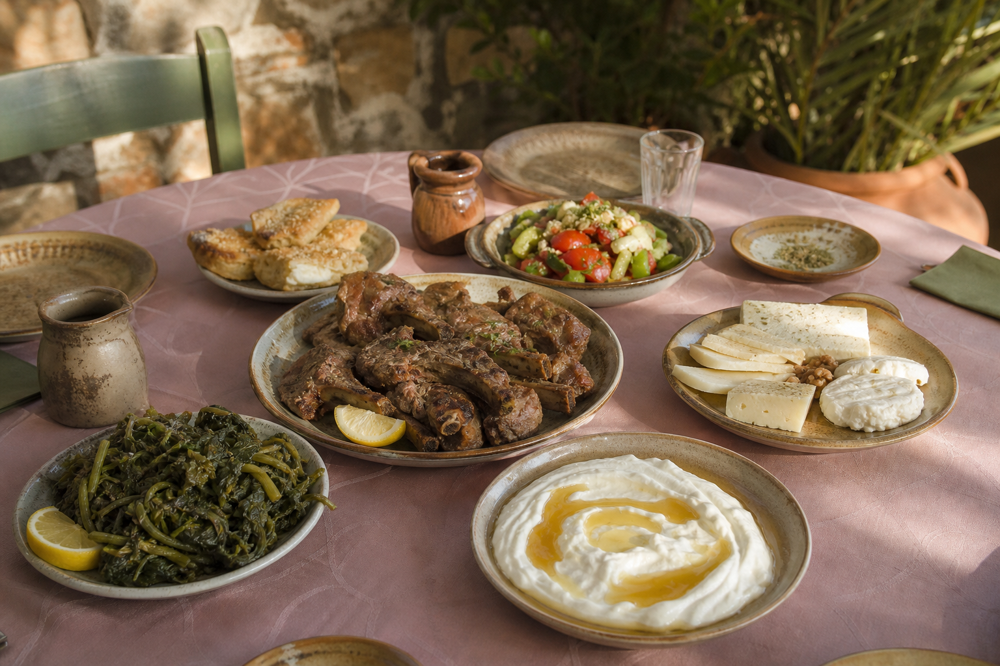

Mountain road
Olive groves, villages and gorge walls make the route part of the day rather than an obstacle between two pins.
Open the route →
Day 04 Tuesday, 13 October 2026 · Elafonisi
A mountain road, a shallow lagoon and the western coast at its brightest.
The road to Elafonisi winds through villages and gorges before reaching shallow turquoise water and sand that, in the right light, really does look pink.
Start with a full tank, downloaded maps, water and enough time for an unhurried drive west.
Follow the road through olive country, hillside villages and a sequence of bends that will settle who is trusted with the coffee.
Use a safe pull-off or village stop for gorge views and a short break before the road continues south.
Park, check the wind and choose a base away from the main access path where conditions allow.
Cross the knee-deep lagoon toward the protected island area.
Explore beyond the busiest strip and adjust the plan to the wind, water temperature and available shelter.
Choose a village taverna for Cretan cheese, wild greens, grilled meat and honey before the drive back north.
Park the car for the night and return to the Venetian Harbour for a relaxed drink beside the water.
Olive groves, villages and gorge walls make the route part of the day rather than an obstacle between two pins.
Open the route →Rose tones appear subtly in selected patches, depending on shell fragments, light and natural conditions.
Find the beach →Clear, shallow water separates the main beach from the protected island reserve and makes the crossing manageable.
Open location →
Order local cheeses, horta or other seasonal wild greens, then add grilled lamb, pork or chicken and finish with Cretan honey. The driver gets first choice, partly as thanks and partly because the return road still contains all the same corners.
Sandals or water shoes make the shallow crossing and rougher patches more comfortable.
Bring a light layer for the mountain road and the cooler return to Chania after sunset.
Review the forecast before leaving; strong wind can change swimming comfort and the entire beach plan.
The same mountain road connects Chania and Elafonisi in both directions. Topolia provides a natural break; the taverna stop belongs on the return, when nobody is watching the beach clock.
Open the driving route →